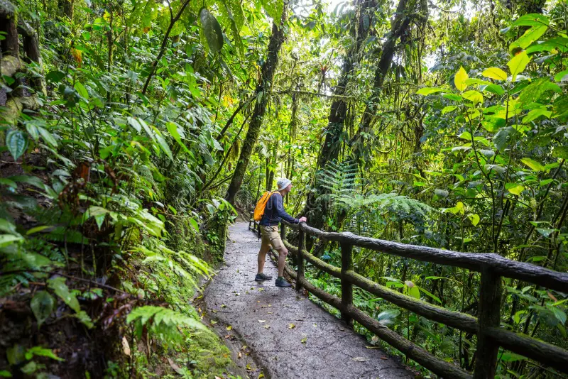
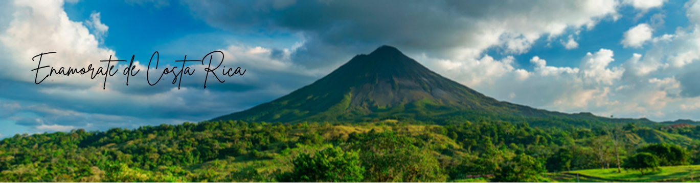
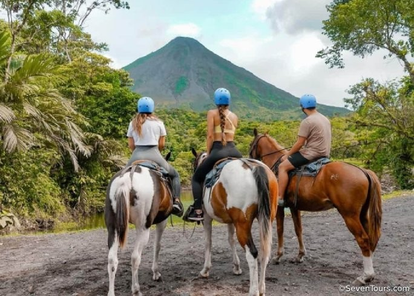
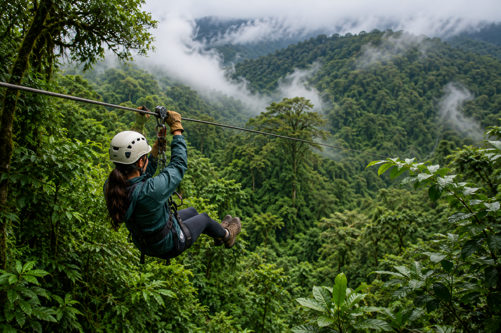
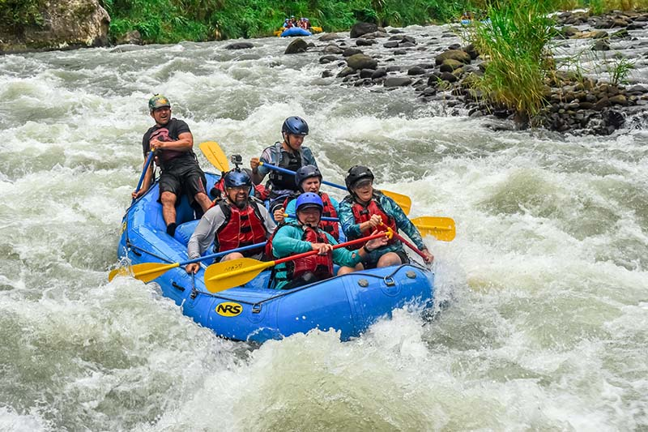
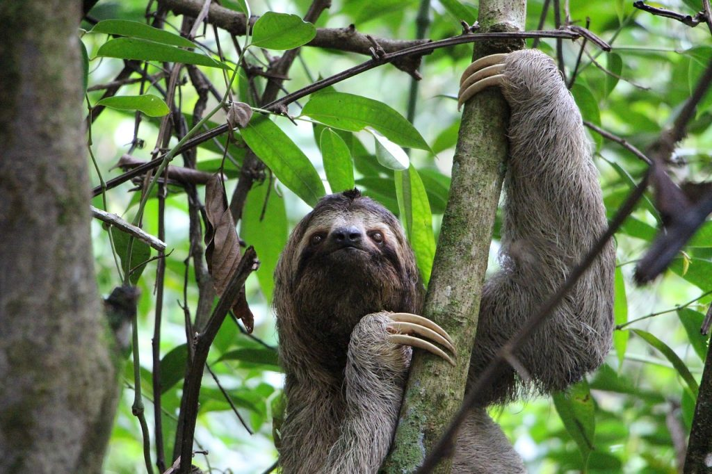
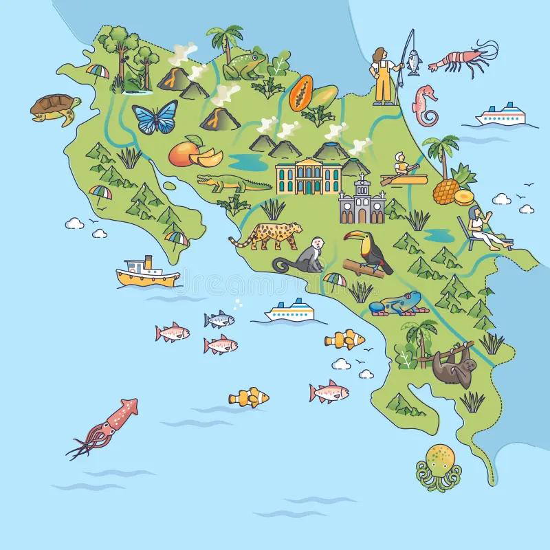
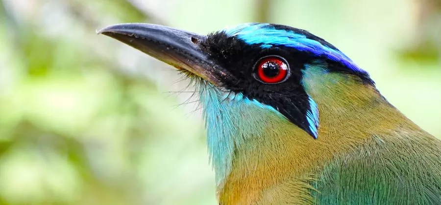
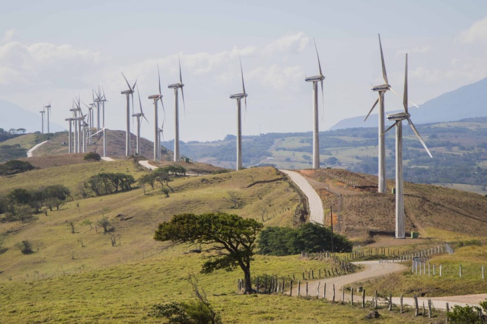
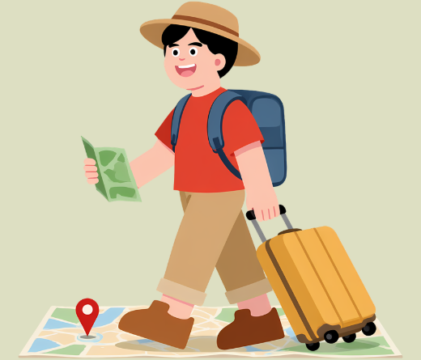

Tapantí: Caminata entre bosques y cataratas
Explora senderos rodeados de naturaleza, descubre impresionantes cataratas y disfruta de la biodiversidad única del Parque Nacional Tapantí.
- 4 horas
- Naturaleza
- Dificultad moderada


Explora senderos rodeados de naturaleza, descubre impresionantes cataratas y disfruta de la biodiversidad única del Parque Nacional Tapantí.

Disfruta de un recorrido a caballo por senderos naturales con impresionantes vistas al volcán.

Deslízate por emocionantes tirolesas sobre el bosque nuboso y disfruta de vistas panorámicas únicas de Monteverde.

Vive una aventura llena de emoción recorriendo uno de los ríos más impresionantes de Costa Rica, rodeado de selva tropical.

De la biodiversidad mundial

Del territorio es área protegida

Especies de aves

Energía renovable generada
Tuanis Trip reúne en un solo lugar los mejores tours y actividades del país. Los usuarios pueden explorar opciones por categoría o provincia, encontrar experiencias destacadas y planificar sus aventuras de manera sencilla.
